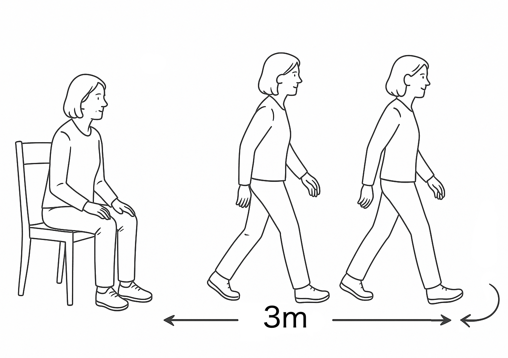

לפני שנתחיל בפעילות, האם ביכולתך כרגע לקום מהכיסא ולצעוד למרחק קצר ובחזרה בצורה בטוחה?
בחרו בחדר או מסדרון שקט, ללא הפרעות. לאחר שמיקמתם את הכסא וסימנתם מרחק של 3 מטר ממנו:
3. כעת קומו, לכו 3 מטרים, הסתובבו במקום, חיזרו אל הכיסא והתיישבו.4. הוציאו את הטלפון מהכיס ולחצו לחיצה ארוכה על “סיום״.

הניחו את הטלפון בכיס הקדמי, התיישבו בנחת ואז קומו וצעדו בהתאם להנחיות.
זמן כולל: